{kind=link}
{kind=link}
{kind=link}
{kind=link}
{kind=link}
{kind=link}
{kind=link}
{kind=link}
{kind=link}
{kind=link}
{kind=link}


Trumpeter 1/32 MiG-21 MF Fishbed J
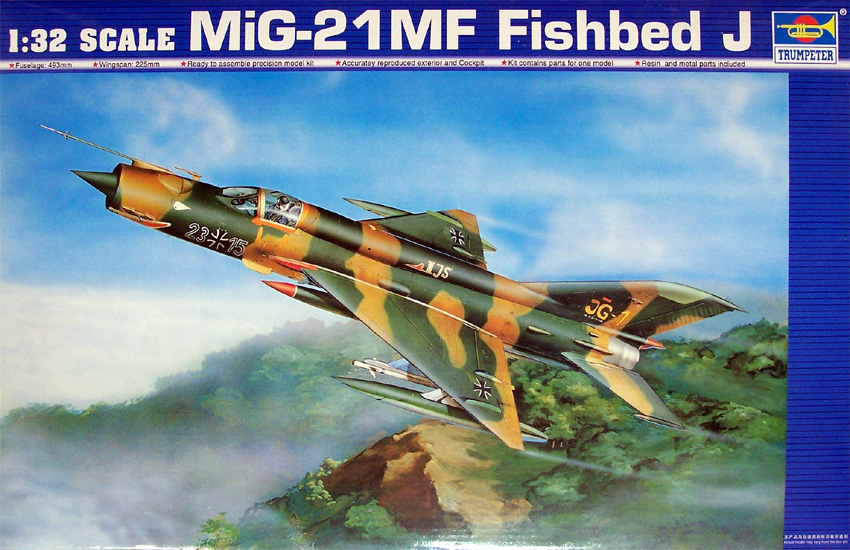
Kit #2218
MSRP $59.95
Images and text Copyright © 2006 by Matt Swan
Developmental Background
The MiG-21 didn’t have a high tech radar system with target acquisition or the ability to haul huge bomb loads over long distances but in many ways it was a pilot’s airplane. It was a simple aircraft that was easy to maintain yet was rugged, fast and agile. When Russia revealed the new prototype fighter in 1956 it began a saga that would encompass nearly every communist block air force. It was not until the early 1960s that the type really got rolling with the exportation of MiG-21 Cs to Finland and East Germany. China also received a few MiG-21s then started building their own as F-7s and F-13s in 1966.
The MiG-21 PFV was a special version produced to handle the humid conditions in Vietnam and clashed with USAF fighters in that conflict. The MiG-21 MF had improved electronics and auto-pilot capabilities and saw considerable action in Afghanistan and the Iran-Iraq war. One even recorded a kill against an IRIAF F-14 Tomcat. The MiG-21 series fighter has experienced nearly the highest production run of any aircraft since World War 2 and was still under production in 1995. It is estimated that nearly 13,000 copies have been made in various configurations.
The Kit
I don’t normally get into the larger scale kits but I could not resist having this big MiG-21. Years ago Revell had issued a large scale MiG-21 but I did not care to abuse myself with that kit. With Trumpeter’s release of the 1/32 kit I felt it was time to take the plunge. This is a large, well detailed model with lots of sprues. This kit began life with Trumpeter as the PF then had additional sprues added to make the MF. In a series of poly bags we have ten sprues of parts done in light gray high pressure injection molded plastic. The surface detail looks very nice with fine crisp consistent panel lines, subtle rivet detail and appropriate vent detail. Wheel wells and cockpit all show a good level of internal detail and the kit includes a seated pilot with optional head pieces. The tail cone is removable with a full engine inside. Overall detail on the engine does seem somewhat soft and may benefit from some scratch work or possible the addition of the Eduard engine detail set.
In addition to the seated pilot the kit contains four ground crew figures that are intended to be posed arming the aircraft. The kit includes a wide selection of external stores for the aircraft giving the modeler options for two types of rocket pods, three types of missiles, two options on fuel tanks or 250 kg bombs. All flight controls can be positioned but most documentation of the MiG-21 on the ground show them in the neutral position with some rudder deflection. 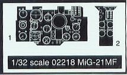
Speed brakes and suction doors can also be positioned open. The kit includes a mid sized sprue of clear parts that cover the canopy in sections that can be modeled open or closed along with a clear instrument panel with acetate instrument sheet. Also here we have a HUD display and a couple of clear lenses. The canopy has well defined raised frame lines and shows good clarity.
Within the plastics parts line-up there is a standard center shock cone but in the metal parts package is a replacement metal shock cone that will act as a counter balance to keep the nose on the ground. The main landing gear struts are all metal pieces that are very clean and well made. These will most definitely provide good support to this large kit. Each gear wheel is attached with a screw and then gets a rubber tire mounted to it. The last thing we have to look at parts wise is a small package of resin detail pieces. These pieces are aimed at the ground crew and provide for an ammo box and loading device. In review of the parts we have three hundred twenty nine gray plastic pieces, eleven clear parts, four metal pieces with six screws, three rubber tires, five resin pieces and a single acetate sheet for a total parts count of three hundred fifty nine pieces in the box. This should keep the modeler busy for a few days.
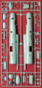
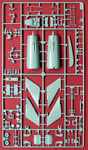
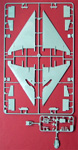
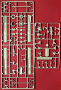
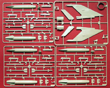
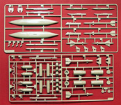
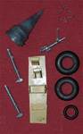
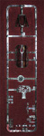
You may click on these small images to view larger pictures
Decals and Instructions
The instructions for this come in a booklet format of sixteen pages. The cover page shows two nice profiles of the MiG and the next two pages are all parts maps. Pages three through twelve contain forty seven exploded view construction steps that include plenty of color call-outs by color name and Gunze Mr. Color numbers. After the exploded views come a paint chart and the standard modeling key codes. There is a single panel devoted to correct painting of the ground crew and three black and white pictures of an actual ground crew servicing the aircraft for positioning reference. One page is reserved for standard service and warning stencils, a page is devoted to decal placement and painting for a Luftwaffe Jg-1 and a page is for decal placement and painting of an Iraqi MiG-21 MF.
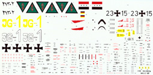
Trumpeter has given the modeler a single large sheet of decals that cover two aircraft, a Luftwaffe Jg-1 unit and one from the Iraqi Air Force. You may click on the small image at right to view a full sized scan of the decals. The decal sheet contains a boatload of service markings and warning stencils as well as the basic unit markings and national marking for the two aircraft. The decals are protected by a sheet of waxed paper taped over the top and the single acetate instrument sheet is packaged here also. The decals look very nice, I cannot discern any print registry issues, color density looks good and they appear to be of a proper thinness. Previous experience with Trumpeter decals indicates they respond well to basic setting solutions.
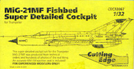
Cutting Edge Cockpit Set
Kit #CEC32067
MSRP $29.99
As I stated in the kit review the cockpit detail is adequate and you could build this right from the box and have an acceptable model but when you get to this scale I feel it is really important to pay attention to detail in the front office. Black Box and Cutting Edge both make sets suitable for this model. Here I want to take a look at the Cutting Edge cockpit set produced specifically for this kit.
This is a full resin package consisting of fifteen resin pieces and a single acetate instrument sheet. Among the resin pieces we have two joy sticks probable more because the master mold is used for a two seat version also.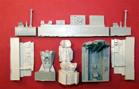 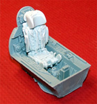 We get a new cockpit tub that will require some interior bracing be removed from the kit fuselage and new upper cockpit sidewalls. Rudder pedals and instrument panels are of course provided but the biggest boost this gives to the overall kit is the amazing seat. This is a serious improvement over the kit part and is very well engineered. The seat actually fits into the ejection slides on the cockpit tub! I did find two small spots of damage on the resin parts that were a result of rough handling during shipping but the pieces were still in the bag and easily repaired.
The parts do not have excess resin flash as is so common with many aftermarket sets and almost no mold separation lines. Pour stubs are large but well located and easily sawn off. The package includes a single A-4 sheet of printed instructions that show all the parts, illustrate the areas inside the fuselage that need surgery before the new parts can go in place along with a few shots of the assembled resin parts. There are also several construction notes included to assist the modeler.
Conclusions
This is a fine model kit of a great aircraft and definitely will make the Revell kit more than obsolete. The price is not so bad for a kit of this size and complexity. The parts and all of good quality with good fit and engineering, options are provided for a wide range of external armaments. Instructions are thorough and complete in nature and seem easy to understand. The addition of metal gear struts and nose weight is a great bonus. Decals are comprehensive and of good quality. Detail is overall good with some soft spots in engine detail and rocket pod detail. Cockpit is adequate but would benefit from either the CE or BB aftermarket set.
There are many aftermarket items available for the MiG-21 series in this scale besides the cockpit sets, Eduard offers a nice engine package along with several interior and exterior detail sets and masking sets. Cutting Edge has not only the cockpit set but a mask set, replacement seat only and some external stores for the jet. There are several different options in aftermarket decals out there as well as detail sets from Pavla, Part and Verlinden Productions. Overall this is a very nice kit all by itself, well within the capabilities of the average modeler and highly recommended for the MiG-21 fan.